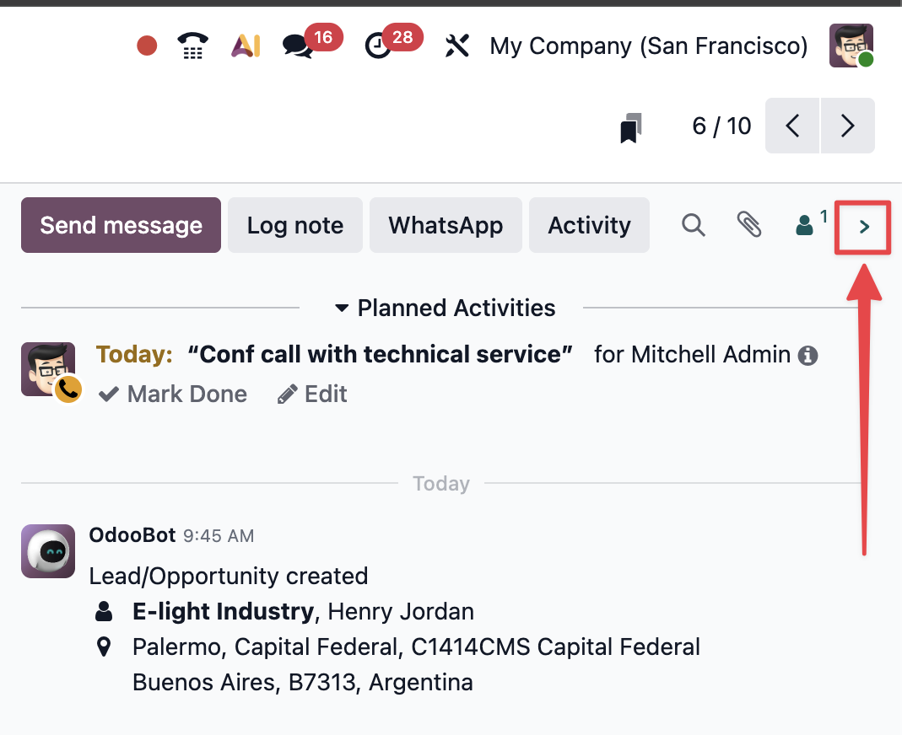

What's new

Version 2.0.3
- Folded chevron restored The collapse chevron shows again on the vertical rail when chatter is folded in side-aside layout.
- Drag-to-unfold fixed Unfolding by dragging the resize handle no longer snaps shut the moment you release the mouse.
Version 2.0.2
- Native below-chatter layouts When Odoo stacks chatter under the form (narrow window, accounting PDF combo, etc.), the extension no longer shows the chevron, folded rail, or resize handle — it follows Odoo’s own placement instead of fighting it.
- Responsive layout sync Resizing the window re-detects whether Odoo is using side-aside or below chatter, so extension controls appear only when they belong.
Version 2
- Toggler in the chatter bar The chevron now lives in the Odoo chatter top bar when open, and in a full-height vertical rail when folded.
- Quick actions when folded When chatter is hidden, use the vertical icon rail to send a message, log a note, open WhatsApp, or schedule an activity — without reopening the panel first.
- Drag to resize Drag the handle between the form and chatter to set your preferred split. Drag it narrow enough and the chatter folds automatically. Your width is remembered in pixels.
- Resize handle in the folded rail When chatter is collapsed, the drag grip is built into the icon bar on the left — drag left to reopen at your preferred width.
- Stretch form when folded New setting to expand the form to full width when the side chatter is hidden, or when chatter is displayed below.
- Better chatter detection Finds the right chatter panel more reliably across Odoo views and SPA navigation.
-
Permanent debug mode fixed
Debug mode now persists across page loads and Odoo SPA navigation again —
?debug=1is re-applied when Odoo drops it. - Smarter layout The toggle is hidden when “Display chatter below” is on. The folded quick-action rail no longer overlaps the status bar when stretch mode is enabled.
- Custom Odoo domains Use the extension on self-hosted or custom Odoo URLs via optional host permissions — add only the sites you need in Settings.
- Removed preset chatter widths Normal / Wide / Large size presets are gone — use drag-to-resize instead for a pixel-perfect split.
- Removed “Hide toggle button” That setting is deprecated. The chevron and folded rail are always available; use the keyboard shortcut (Alt+Shift+C / ⌘⇧X) for quick toggling too.
- Polish Topbar chevron no longer clips at the panel edge. Display below and stretch form can be used together without a tab reload.